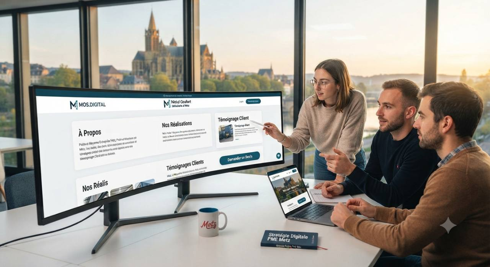

🧭
Clear positioning
A home page that presents your trade, what makes you different and the areas of Metz you cover, without over-optimisation.
AQUA-R-WEB designs professional business websites for Metz companies that want to be credible, visible on Google and easy to contact from a mobile phone.

Your future customer compares several professionals before calling. Your website must therefore explain your offer quickly, reassure and lead to a simple action.
A home page that presents your trade, what makes you different and the areas of Metz you cover, without over-optimisation.
Readable content and accessible contact buttons for prospects looking for a provider on their phone.
Tags, content hierarchy, local data and speed are built in from the design stage, not added afterwards.
We adapt the website structure to your sales cycle. A tradesperson needs to show their work and service area. A liberal profession needs to reassure about its expertise. An SME needs to organise several offers and make booking easy.
Mentions of Metz, Montigny-lès-Metz or Woippy are included only when they describe your business. The goal is to match the search intent, not to repeat a keyword artificially.
Goals, customers, offer and catchment area.
Page organisation and visual direction.
Development, content, mobile and SEO.
Checks, domain, indexing and follow-up.
We can build your visibility around the towns where you really work.
A professional business website starts at €490. The quote depends on the number of pages, the content and the features required.
Yes. We support tradespeople, shop owners, liberal professions, associations and SMEs throughout the Metz area.
Yes. The structure, tags, performance and main content are prepared for the relevant local searches.
Get a proposal tailored to your business and your budget.